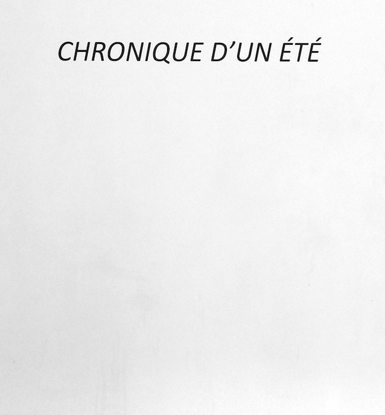
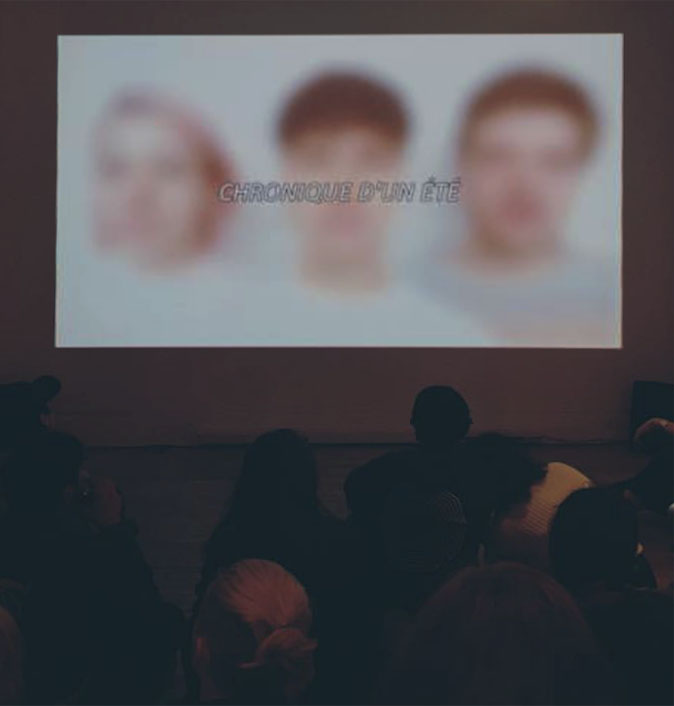
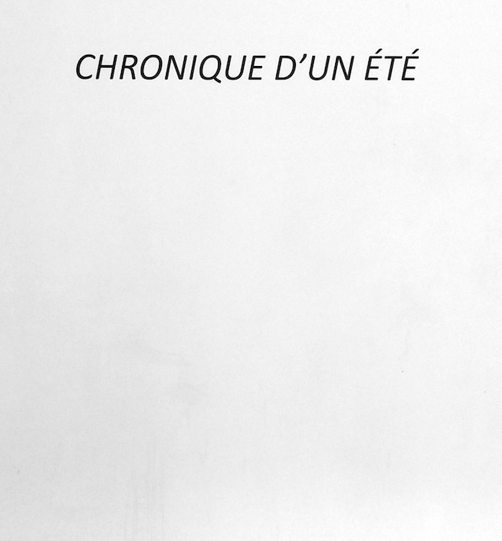
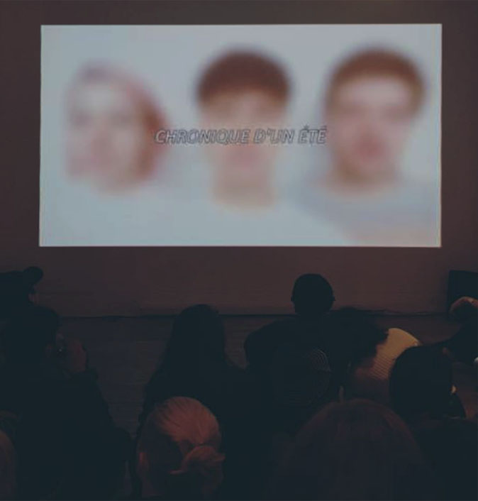
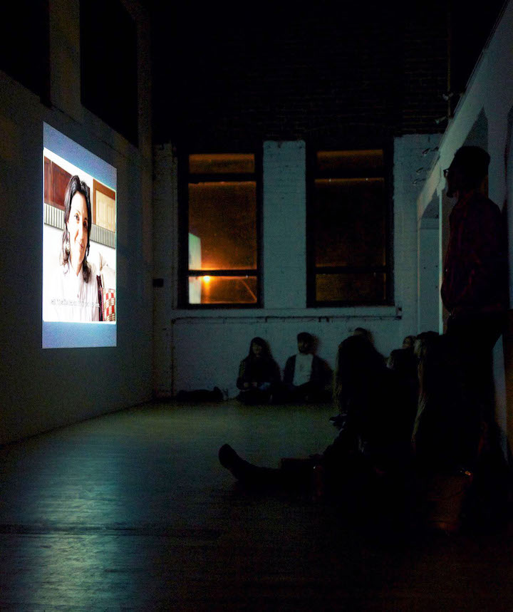
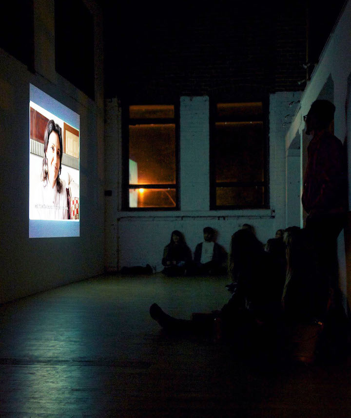

Veronica Mockler
THE LEFT POINT
video | HD color + sound | 04:56 min | 2017
The Left Point is a critical representation of our current political experience. More information will follow.
CANVASSERS
video | HD color + sound | 15:28 min | 2016
Mich and Marshall are asked to share a personal story in front of a camera. Both participants come to experience a unified understanding of events when one’s story is orally taken on by the other. This continuous one-shot 15-minute documentary performance demonstrates our empathetic capacity as individuals. This piece was made in response to recent scientific findings that demonstrate that a 10-minute active one-on-one conversation between two individuals can durably reduce longstanding ingrained prejudice.¹
These findings inspired this performance for video in addition to bringing an empirical premise to the artist’s constant use of human interaction as a conceptual and political device.

This work is distributed non-exclusively by Videographe : www.videographe.org
For more information about the work please contact info@videographe.org
¹ Science Mag 08 Apr 2016 | Vol. 352, Issue 6282, pp. 220-224 | DOI: 10.1126/science.aad9713 | Authors : David Broockman | Joshua Kalla
RIVIÈRES
performance | city of Montreal | three day representation | 2017
Rivières is a series of documentary performances presented in Montreal’s Côte-des-Neiges. More information will follow.

bonour on test
un paragraphe.
RIVIÈRES is now funded by the National Theater School of Canada's TEC program!
The National Theatre School of Canada created permanent funds in several community foundations across Canada in order to support, in perpetuity, artistic projects conceived and produced by its’ alumni. The TEC (Theatre Engaging Communities) therefore serves to fund these projects, on condition that they are innovative in form or content and build ties with the community. This program combines the pursuit of artistic excellence with the determination to strengthen theatre’s social impact. | ent-nts.ca/en/tec

Screening of THE LEFT POINT in Dazibao
Dazibao is screening THE LEFT POINT alongside works of Kathryn Elkin and Anna Hawkins as part o THIS IS NOT A LECTURE #4 an outreach activity of exhibition TELEVISION curated by France Choinière and LUX (UK). Fabulous works on until June 17 2017. | dazibao.org

CANVASSERS is going into distribution with Videographe
CANVASSERS is going into distribution with one of Canada’s biggest and long-standing experimental film and video-art distributor : VIDEOGRAPHE (CANADA). Very happy to be partnering up with this amazing Montreal institution! This distribution is non-exclusive. For any inquiries regarding this work, for both national or international showings, please contact : info@videographe.org | videographe.org

RESEARCH IN ICELAND
In Iceland during March 2017 gathering material for upcoming video essay on volcanoes and Donald Trump.

SOLO EXHIBITION OPENING IN REDDING FLAGG GALLERY TORONTO CANADA
CANVASSERS curated by Christophe Barbeau is opening this Tuesday February 14th in Redding Flagg Gallery Toronto, Canada. Exhibition’s opening is on the 14th from 6PM to 11PM. I’m very excited about this exhibition. It’s been such a pleasure working with Christophe Barbeau on this show!

Veronica Mockler is a Montreal-based artist working in video and performance. Her work is about the experience and acknowledgment of other people. Through varied modes of representation, Veronica brings individuals and their realities to different audiences. She uses human interaction as a conceptual and political vehicle to encourage progressive agency. Veronica is driven by the idea that experiencing the other enables one’s consideration of the other, something she believes is needed more than ever.
Veronica Mockler was born in Quebec, Canada in 1991 and completed a Bachelor of Fine Arts with Distinction at Concordia University in 2014. Her work has been featured since in solo and group exhibitions. She has worked as a curator, writer and cultural mediator in addition to receiving private and public funding for her endeavours.
For any inquiries,
please contact the artist herself
veronica.florence.mockler@gmail.com
or her distributor Videographe at:
info@videographe.org
for updates, follow her on
instagram

 





 
